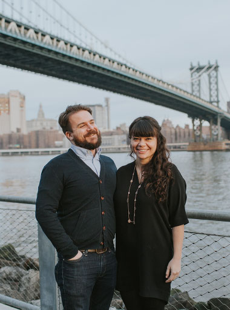
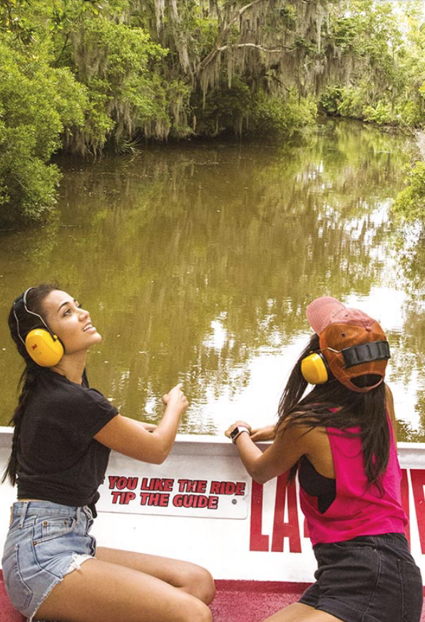
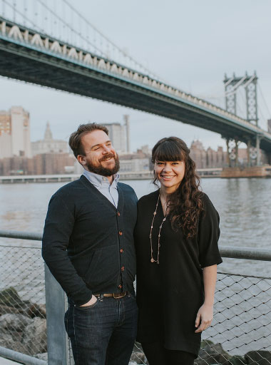
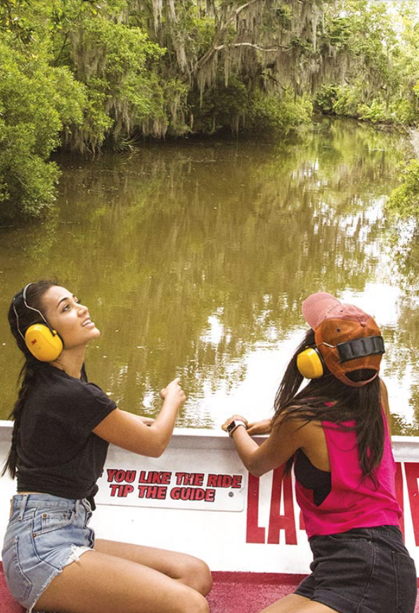

GOLDEN HILL,
SAN DIEGO
WITH LOCAL BEEKEEPER HILARY KEANY
WILLIAMSBERG,
NYC
WITH BROOKLYN BORN & BRED DAN CORRIA
GRAND SOUTHERN,
(START) LOS ANGELES
EXPLORE THE BEST OF THE SOUTHERN STATES
GOLDEN HILL, SAN DIEGO
By now the lure of the Pacific will probably be pretty intense, and we have just the thing...
Fast, fun, and just a little bit fancy, who doesn't love cruising on the ocean and riding white water on a speed boat? Run by possibly the most quintessentially Californian dudes you'll ever meet, hop on board at the marina and as you cruise out, eye up the millionaires yachts for when you make your fortune.
Once out in the bay, it's throttle up as you do a big old loop to the Coronado Bridge and back. On route, you'll pass huge navy ships that will make you feel teeny tiny, and the absolute highlight of the trip - you'll get up close to the docks where San Diego's most beloved residents hang out. Who are they? Sea lions!
Just 13 miles south of downtown San Diego, you'll find Suzie's Farm, a 70-acre organic working farm that grows over 100 varieties of seasonal veggies, herbs, flowers and fruits, year round.
Pretty as a picture, Suzie's Farm is also where Hilary homes her bees, offering group hive tours once a month. What does this entail? Well, after suiting up in your bee suit, Hilary will lead you to the heart of the beehive, where thousands of busy buzzing bees are working hard to produce delicious honey.
BUT don't 'bee' confused; Hilary's tour isn't about learning to 'bee' a beekeeper, it is focused more on bee welfare, the various uses for honey, and how you can help these little unsung heros out in your own backyard.
By now the lure of the Pacific will probably be pretty intense, and we have just the thing...
Fast, fun, and just a little bit fancy, who doesn't love cruising on the ocean and riding white water on a speed boat? Run by possibly the most quintessentially Californian dudes you'll ever meet, hop on board at the marina and as you cruise out, eye up the millionaires yachts for when you make your fortune.
Once out in the bay, it's throttle up as you do a big old loop to the Coronado Bridge and back. On route, you'll pass huge navy ships that will make you feel teeny tiny, and the absolute highlight of the trip - you'll get up close to the docks where San Diego's most beloved residents hang out. Who are they? Sea lions!
WILLIAMSBERG, NYC
By now the lure of the Pacific will probably be pretty intense, and we have just the thing...
Fast, fun, and just a little bit fancy, who doesn't love cruising on the ocean and riding white water on a speed boat? Run by possibly the most quintessentially Californian dudes you'll ever meet, hop on board at the marina and as you cruise out, eye up the millionaires yachts for when you make your fortune.
Once out in the bay, it's throttle up as you do a big old loop to the Coronado Bridge and back. On route, you'll pass huge navy ships that will make you feel teeny tiny, and the absolute highlight of the trip - you'll get up close to the docks where San Diego's most beloved residents hang out. Who are they? Sea lions!
Just 13 miles south of downtown San Diego, you'll find Suzie's Farm, a 70-acre organic working farm that grows over 100 varieties of seasonal veggies, herbs, flowers and fruits, year round.
Pretty as a picture, Suzie's Farm is also where Hilary homes her bees, offering group hive tours once a month. What does this entail? Well, after suiting up in your bee suit, Hilary will lead you to the heart of the beehive, where thousands of busy buzzing bees are working hard to produce delicious honey.
BUT don't 'bee' confused; Hilary's tour isn't about learning to 'bee' a beekeeper, it is focused more on bee welfare, the various uses for honey, and how you can help these little unsung heros out in your own backyard.
By now the lure of the Pacific will probably be pretty intense, and we have just the thing...
Fast, fun, and just a little bit fancy, who doesn't love cruising on the ocean and riding white water on a speed boat? Run by possibly the most quintessentially Californian dudes you'll ever meet, hop on board at the marina and as you cruise out, eye up the millionaires yachts for when you make your fortune.
Once out in the bay, it's throttle up as you do a big old loop to the Coronado Bridge and back. On route, you'll pass huge navy ships that will make you feel teeny tiny, and the absolute highlight of the trip - you'll get up close to the docks where San Diego's most beloved residents hang out. Who are they? Sea lions!
HAVE A QUESTION?
We know that planning your next adventure can happen at all hours of the day, which is why we offer more choice in ways to get in touch. Up late? So are we, with extended customer service hours. Not keen to talk over the phone? Flick us an email & we’ll get back to you ASAP.
We’re here to connect when it suits you, giving you more time to plan big adventures.
FAQs
Read more in our FAQ's
1 HOW DO I MAKE A BOOKING?
You have a few options when booking your Contiki trip. You can choose to book online, call a Contiki representative on +27 11 280 8481 or visit your local travel agent.
2 CAN I MAKE A CHANGE TO MY BOOKING?
You have a few options when booking your Contiki trip. You can choose to book online, call a Contiki representative on +27 11 280 8481 or visit your local travel agent.
3 DO AIRFAIRS INCLUDE THE COSTS TO THE TRIP?
You have a few options when booking your Contiki trip. You can choose to book online, call a Contiki representative on +27 11 280 8481 or visit your local travel agent.
4 DO YOU OFFER DISCOUNT TRIPS?
You have a few options when booking your Contiki trip. You can choose to book online, call a Contiki representative on +27 11 280 8481 or visit your local travel agent.
5 WHAT'S INCLUDED IN A CONTIKI TRIP?
You have a few options when booking your Contiki trip. You can choose to book online, call a Contiki representative on +27 11 280 8481 or visit your local travel agent.
STILL NOT SATISFIED?
European Highlights
It was such a memorable experience. My wife and I got the opportunity to meet 80 awesome individuals and party like there was no tomorrow. It was one of the highlights of our honeymoon. I recommend this trip to anyone looking to have an amazing experience.